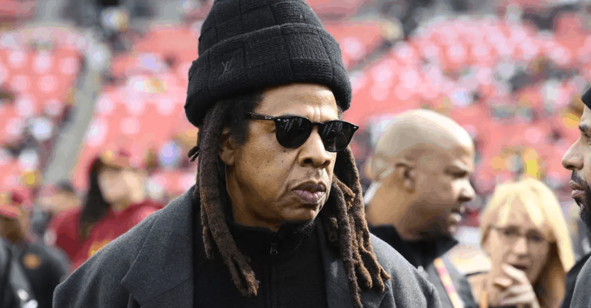
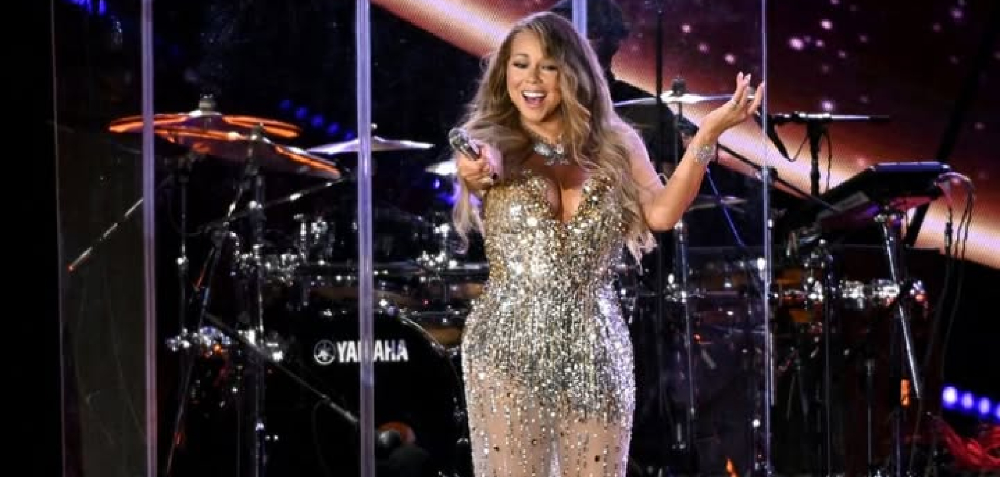
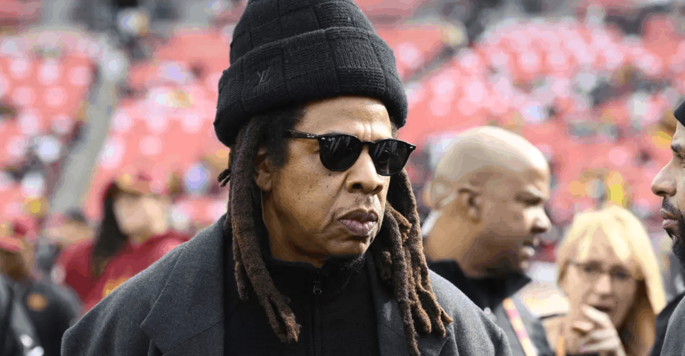
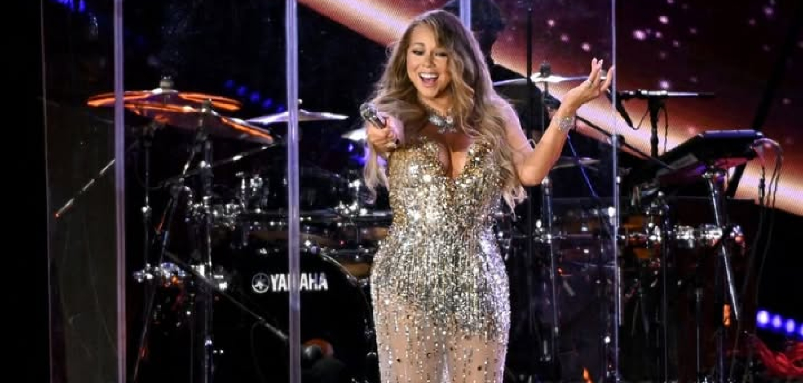

La NFL respalda a Jay-Z en medio
de acusaciones de violación.
Mariah Carey ofrecerá show en
el NFL Christmas Gameday.
La asociación entre la NFL y Jay-Z y su compañía de
entretenimiento,Roc Nation, no cambiará a pesar de
que una mujer acusó al rapero y magnate de negocios
de violarla cuando tenía 13 años, dijo el miércoles
el comisionado de la liga, Roger Goodell.
Jay-Z, cuyo verdadero nombre es Shawn Carter, fue
incluido como acusado el domingo en una demanda civil
presentada contra su colega estrella del hip-hop Sean
“Diddy” Combs en el Tribunal de Distrito de Estados
Unidos en Nueva York. La denuncia, presentada originalmente
en octubre, ahora alega que los dos hombres violaron a
la niña de 13 años en una fiesta después de los MTV
Video Music Awards en 2000.
La icónica Mariah Carey, conocida mundialmente como la
“Reina de la Navidad”, reafirmará su título este 25 de
diciembre al encabezar el NFL Christmas Gameday, transmitido
por Netflix. Carey, de 55 años, interpretará su exitoso y
atemporal tema All I Want for Christmas Is You, una canción
que ha roto récords y se ha convertido en un clásico navideño.
Su actuación, grabada especialmente para esta jornada, promete
emocionar a millones de espectadores justo antes de los partidos
programados.
“Esta Navidad, todos cumpliremos nuestros deseos”, dijo Carey
en referencia al evento. “La NFL se transmitirá en vivo en Netflix
y yo también estaré allí”.